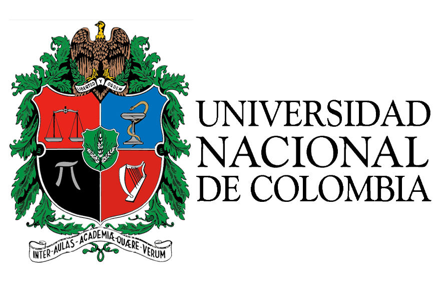

Examen Universidad Universidad Nacional

La Prueba de Admisión evalúa cinco componentes: Matemáticas, Ciencias Naturales, Ciencias Sociales, Análisis Textual y Análisis de Imagen,
a través de ciento veinte (120) preguntas de opción múltiple con única respuesta y se dispone de un tiempo máximo de 3 horas y 30 minutos para resolverlo.
Se hace una estandarización de la habilidad en cada componente con una media en 10 y una desviación de 1. Posteriormente, se consolida un puntaje final, con base en las habilidades en los componentes evaluados y a ese puntaje final se le hace una estandarización, semejante a la que se hace por componente, pero con media en 500 y desviación en 100.
Finalmente, los cupos se asignan en estricto orden de puntaje total descendente hasta el número ofrecido para cada programa curricular.
tomado de la Universidad de Nacional de Colombia
En el siguiente enlace te ayudará a la familiarización con el examen de admisión, regístrate y practica
A través de la practica se puede lograr la excelencia, este examen requiere de mucha dedicación y entrenamiento para lograr resultados esperados
Ir a examen Universidad de Antioquia
Ir a Thatquiz
Volver a página principal
Muchos éxitos